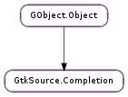

| add_provider(provider) | |
| block_interactive() | |
| create_context(position) | |
| get_info_window() | |
| get_providers() | |
| get_view() | |
| hide() | |
| move_window(iter) | |
| remove_provider(provider) | |
| show(providers, context) | |
| unblock_interactive() |
| Name | Type | Flags | Description |
|---|---|---|---|
| accelerators | int | r/w | Number of proposal accelerators to show |
| auto-complete-delay | int | r/w | Completion popup delay for interactive completion |
| proposal-page-size | int | r/w | Proposal scrolling page size |
| provider-page-size | int | r/w | Provider scrolling page size |
| remember-info-visibility | bool | r/w | Remember the last info window visibility state |
| select-on-show | bool | r/w | Select first proposal when completion is shown |
| show-headers | bool | r/w | Show provider headers when proposals from multiple providers are available |
| show-icons | bool | r/w | Show provider and proposal icons in the completion popup |
| view | GtkSource.View | r/w/c | The GtkSource.View bound to the completion |
| Name | Parameters | Return | Description |
|---|---|---|---|
| activate-proposal | The GtkSource.Completion ::activate-proposal signal is a keybinding signal which gets emitted when the user initiates a proposal activation. Applications should not connect to it, but may emit it with GObject.signal_emit_by_name () if they need to control the proposal activation programmatically. | ||
| hide | Emitted when the completion window is hidden. The default handler will actually hide the window. | ||
| move-cursor | Gtk.ScrollStep, int | The GtkSource.Completion ::move-cursor signal is a keybinding signal which gets emitted when the user initiates a cursor movement. The Up, Down, PageUp, PageDown, Home and End keys are bound to the normal behavior expected by those keys. When step is equal to Gtk.ScrollStep.PAGES, the page size is defined by the GtkSource.Completion :proposal-page-size property. It is used for the PageDown and PageUp keys. Applications should not connect to it, but may emit it with GObject.signal_emit_by_name () if they need to control the cursor programmatically. | |
| move-page | Gtk.ScrollStep, int | The GtkSource.Completion ::move-page signal is a keybinding signal which gets emitted when the user initiates a page movement (i.e. switches between provider pages). Control + Left is for going to the previous provider. Control + Right is for going to the next provider. Control + Home is for displaying all the providers. Control + End is for going to the last provider. When step is equal to Gtk.ScrollStep.PAGES, the page size is defined by the GtkSource.Completion :provider-page-size property. Applications should not connect to it, but may emit it with GObject.signal_emit_by_name () if they need to control the page selection programmatically. | |
| populate-context | GtkSource.CompletionContext | Emitted just before starting to populate the completion with providers. You can use this signal to add additional attributes in the context. | |
| show | Emitted when the completion window is shown. The default handler will actually show the window. |
| Name | Type | Access |
|---|---|---|
| parent_instance | GObject.Object | r |
Bases: GObject.Object
| Parameters: | provider (GtkSource.CompletionProvider) – a GtkSource.CompletionProvider. |
|---|---|
| Raises: | GLib.GError |
| Returns: | True if provider was successfully added, otherwise if error is provided, it will be set with the error and False is returned. |
| Return type: | bool |
Add a new GtkSource.CompletionProvider to the completion object. This will add a reference provider, so make sure to unref your own copy when you no longer need it.
Block interactive completion. This can be used to disable interactive completion when inserting or deleting text from the buffer associated with the completion. Use GtkSource.Completion.unblock_interactive () to enable interactive completion again.
| Parameters: | position (Gtk.TextIter or None) – a Gtk.TextIter, or None. |
|---|---|
| Returns: | a new GtkSource.CompletionContext. The reference being returned is a ‘floating’ reference, so if you invoke GtkSource.Completion.show () with this context you don’t need to unref it. |
| Return type: | GtkSource.CompletionContext |
Create a new GtkSource.CompletionContext for completion. The position where the completion occurs can be specified by position. If position is None, the current cursor position will be used.
| Returns: | The GtkSource.CompletionInfo window associated with completion. |
|---|---|
| Return type: | GtkSource.CompletionInfo |
The info widget is the window where the completion displays optional extra information of the proposal.
| Returns: | list of GtkSource.CompletionProvider. |
|---|---|
| Return type: | [GtkSource.CompletionProvider] |
Get list of providers registered on completion. The returned list is owned by the completion and should not be freed.
| Returns: | The GtkSource.View associated with completion. |
|---|---|
| Return type: | GtkSource.View |
The GtkSource.View associated with completion.
Emitted when the completion window is hidden. The default handler will actually hide the window.
| Parameters: | iter (Gtk.TextIter) – a Gtk.TextIter. |
|---|
Move the completion window to a specific iter.
| Parameters: | provider (GtkSource.CompletionProvider) – a GtkSource.CompletionProvider. |
|---|---|
| Raises: | GLib.GError |
| Returns: | True if provider was successfully removed, otherwise if error is provided, it will be set with the error and False is returned. |
| Return type: | bool |
Remove provider from the completion.
| Parameters: |
|
|---|---|
| Returns: | True if it was possible to the show completion window. |
| Return type: |
Emitted when the completion window is shown. The default handler will actually show the window.
Unblock interactive completion. This can be used after using GtkSource.Completion.block_interactive () to enable interactive completion again.